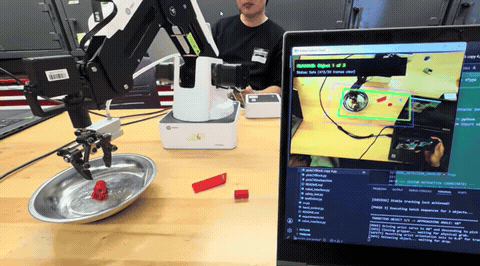

projects / 5
Toyota Innovation Challenge — Best Overall
An autonomous robotic pick-and-place manipulation pipeline engineered for agile warehouse inventory handling. Integrating overhead computer vision, real-time bounding box orientation calculation, and dynamic clearance-zone safety validation, the system delivered the competition's fastest pick throughput and zero-fault safety record, taking home Best Overall — 1st Place at the IDEAs Clinic S26 Toyota Innovation Challenge.
Live Demonstration · Computer Vision HUD
Autonomous Pick Routine — Robotic arm detecting parts via OpenCV, aligning gripper orientation, and completing warehouse transfers.
- Awarded Best Overall — 1st Place across all engineering cohorts for optimal warehouse logistics efficiency.
- Programmed real-time OpenCV contour extraction and angle tracking to orient the robot gripper dynamically to any randomly placed workpiece.
- Engineered an automated safety verification state machine ensuring clear workspace bounds before commanding motion.
- Official challenge repository: ideasclinicuwaterloo/s26-toyota-innovation-challenge.
01Vision Pipeline & Cycle Optimization
- HSV color mask thresholding and minimum-area bounding rectangles compute precise object centroid and orientation angle.
- Trajectory planner commands wrist servo yaw prior to vertical descent, preventing mechanical binding against basin sidewalls.
- Achieved lowest total cycle time across all participating teams while maintaining a 100% successful deposit rate.
Preview Animation · Looping Pick Cycle

Cycle Execution — End effector executing compliant descent, gripping target workpiece, and clearing boundary envelope.